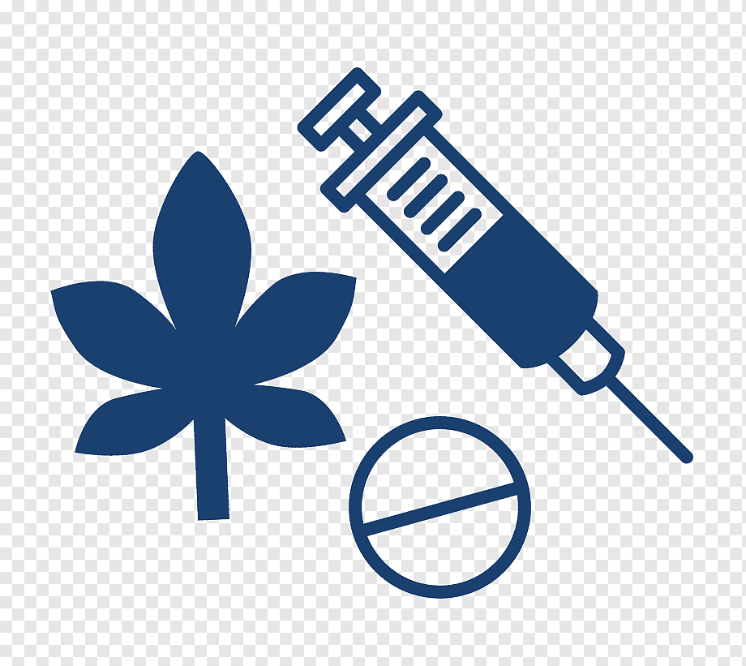

Droga, según el diccionario de la Real Academia Española, es cualquier “sustancia mineral,
vegetal o animal, que se emplea en la medicina, en la industria o en las bellas artes”. En su
segunda acepción, droga es cualquier “sustancia o preparado medicamentoso de efecto estimulante,
deprimente, narcótico o alucinógeno.”
Según la Organización Mundial de la Salud (OMS), droga es toda sustancia que introducida en el
organismo por cualquier vía de administración, produce de algún modo una alteración del natural
funcionamiento del sistema nervioso central del individuo y además es susceptible de crear
dependencia, ya sea psicológica, física o ambas.
También, según la OMS, las sustancias psicoactivas
Drogas
Drugs.com. (2022). Drugs.com | Prescription Drug Information, Interactions & Side
Effects. https://www.drugs.com/

02/03/2022
Commonly used drugs charts
Many drugs can alter a person’s thinking and judgment, and can lead to health risks, including
addiction, drugged driving, infectious disease, and adverse effects on pregnancy. Information on
commonly used drugs with the potential for misuse or addiction can be found here.1
Ayahuasca
A tea made in the Amazon from a plant (Psychotria viridis) containing the hallucinogen DMT,
along with another vine (Banisteriopsis caapi) that contains an MAO inhibitor preventing the
natural breakdown of DMT in the digestive system, which enhances serotonergic activity. It
was
used historically in Amazonian religious and healing rituals. For more information, see the
Hallucinogens and Dissociative Drugs Research Report.1
Medications that slow brain activity, which makes them useful for treating anxiety and sleep
problems. For more information, see the Misuse of Prescription Drugs Research Report.
1
ncreased blood pressure and heart rate/chronic lung disease; cardiovascular disease;
Nicotine Found in cigarettes, cigars, bidis, and smokeless tobacco Not scheduled/smoked,
snorted, chewed stroke; cancers of the mouth, pharynx, larynx, esophagus, stomach, pancreas,
cervix,
(snuff, spit tobacco, chew) kidney, bladder, and acute myeloid leukemia; adverse pregnancy
outcomes; addiction2
In low doses, euphoria, mild stimulation, relaxation, lowered inhibitions; in higher doses,
Alcohol (ethyl alcohol) Found in liquor, beer, and wine Not scheduled/swallowed drowsiness,
slurred speech, nausea, emotional volatility, loss of coordination, visual
distortions, impaired memory, sexual dysfunction, loss of consciousness/ increased risk
of injuries, violence, fetal damage (in pregnant women); depression; neurologic
deficits; hypertension; liver and heart disease; addiction; fatal overdose2
Euphoria; drowsiness; impaired coordination; dizziness; confusion; nausea; sedation;
Heroin Diacetylmorphine: smack, horse, brown sugar, dope, H, junk, skag, skunk, white
I/injected, smoked, snorted feeling of heaviness in the body; slowed or arrested
breathing/constipation;
horse, China white; cheese (with OTC cold medicine and antihistamine) endocarditis;
hepatitis; HIV; addiction; fatal overdose2
The social impact of drug abuse
Prepared for the World Summit for Social Development, which was held at Copenhagen in March
1995, the paper that follows analyses social aspects of many of the principal issues involved in
drug abuse
and drug control that are of concern to organizations of the United Nations system and other
intergovernmental organizations. The paper was originally commissioned by the United Nations
International Drug Control Programme (UNDCP) and drafted by an independent consultant, Jean Paul
Smith, former consulting Psychologist and Senior Policy Analyst at the National Institute on
Drug Abuse,
Washington. It was subsequently reviewed and revised by a United Nations inter-agency group. The
names of the organizations that provided information for this paper appear
below.3
The purpose of the paper is twofold: first, to examine the social and economic impact of drug
abuse
from a broad international perspective. Secondly, based on that analysis, to suggest how
problems of drug
abuse prevention and control can be addressed in a constructive, coordinated manner. The
paper concerns
primarily narcotic drugs and psychotropic substances but also includes, where appropriate,
information on
problems related to the abuse of other addictive substances such as alcohol and tobacco. It
is divided into
four main sections.3
Part one describes the nature of the drug problem, in particular the chain of drug production,
distribution and consumption. It also provides information on the economics of this chain,
including
statistics and comparative data by country and geographical area; on how changes in the
global economy
have affected these developments; and on the monitoring of drug abuse by various agencies.
3
Part three covers the interaction between drug abuse and development, including efforts by the
international community to facilitate economic and social progress in developing countries.
Development
is addressed in the broad sense of the word, i.e. it comprehends not simply economic development
but also
sound environmental practices, social conditions and the meeting of basic needs. Part three
describes some
of the negative consequences that drug abuse and drug trafficking have had. It analyses
alternative
development in regions that are economically dependent on the illicit drug industry and includes
moral and
social considerations as they influence farmers and communities growing crops for the illicit
drug industry.3
 Ranking drogas
Ranking drogas
 Video
drogas
Video
drogas
.png) Mi video
Mi video
.png) Meme
Meme